winhex是一个常用的磁盘分析工具（虽然我也是第一次用），这次主要来分析一下Fatfs的文件系统架构，加深对其的理解。
前情提要请参考：[\[stm32\]FatFs文件系统 - www.hawkjgogogo.com](http://www.hawkjgogogo.com/2024/03/05/stm32fatfs%e6%96%87%e4%bb%b6%e7%b3%bb%e7%bb%9f/)
根据上一节的分析，我引出小结的一段话作为这篇文章的开始：
外部存储介质中的管理者（MBR），与我们程序中的FatFs\[Vol\]在一定程度上是同步的，其还掌管着簇链，类似于目录的结构，我们只要访问程序中的FatFs\[Vol\]就能获得到我们想要找到的特定文件或者文件夹进行修改，同时修改sd卡中的目录结构（主机给SD卡同步提供数据）。当下一次上电的时候，SD卡给主机同步提供数据，这样子就可以实现双方的目录同步，查找特定的文件只需要知道它在SD卡的存储区中处于什么位置。
这段话我认为是有BUG的，其只是片面地总结了主机与SD之间的同步关系SYNC，但是并没有总结出Fat文件系统的内核——Fat表。那么接下来，我们将会详细地分析Fat文件系统的组成。
（2024/3/6修正上面的段落）MBR类似于单向链表的头，我们程序中的Fatfs\[vol\]能够获取当前物理设备的MBR，然后根据MBR里特定的偏移量数据（逻辑分区0的扇区号偏移量），获取到逻辑分区0，也就是下图中的DBR，根据DBR提供的保留扇区数等信息，我们又可以计算得到FAT表的位置，FAT表中存储着每一个簇的使用情况，以及对于占有多个簇的文件（还是类似于单向链表在内存管理中发挥到的作用，在内存中存储时不连续的，所以需要链表将不连续的内存连接在一起），再向后偏移FAT表占扇区数\*FAT表的个数，我们又能够找到数据区，数据区的扇区0（对应着的簇号是簇2）存储着根目录，根目录就类似于文章的目录，形成一个树状结构，我们就能找到各个文件所在的位置。综上，我们只要知道MBR这512个字节存储着的是什么，我们就能通过相对位置偏移，从物理存储设备中读取到我们想要的文件。
本文参考：https://www.sunev.cn/embedded/943.html">FatFs文件系统结构分析（强烈推荐） - 尚为网 (sunev.cn)
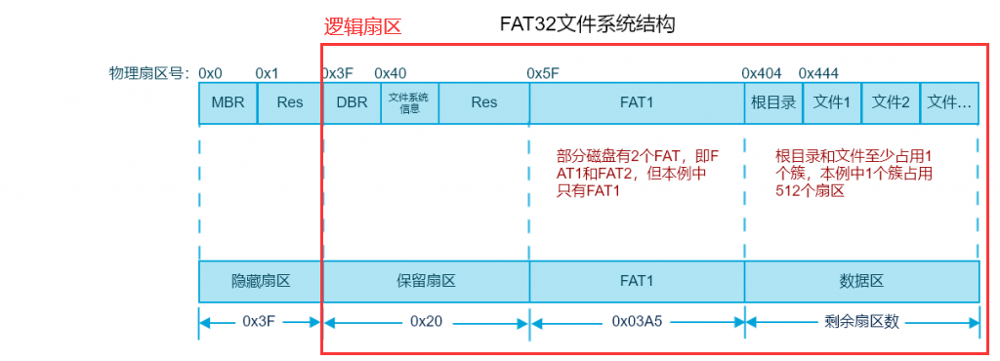
本文的思路是横向，从上图的左侧MBR一直到根目录及文件存储。
WINHEX打开磁盘
在计算机中，一切皆为二进制，所以磁盘作为一个存储介质，其本质也是存储的二进制。
在Fat文件系统中存在着逻辑扇区以及物理扇区，可以理解为一块磁盘就是一个超级大的execl表格，每个表格里面装着一个8bit数据。
物理扇区在一定意义上就是磁盘的绝对地址，是从硬件（存储设备）层面而言的。
逻辑扇区是操作系统和应用程序视图上的抽象概念。通常，操作系统和文件系统使用逻辑扇区来组织磁盘上的数据。
物理扇区和逻辑扇区是相对偏移的，正如上图所示，逻辑扇区的起始地址相较于物理扇区偏移了0x3F（十进制63）个扇区。
因为有物理扇区和逻辑扇区之分，所以我们使用winhex打开的方式也是不同的。
进入到winhex.exe中后，“文件->创建磁盘镜像”，选择物理驱动器中的磁盘，格式化为fat32格式的u盘或者SD卡。
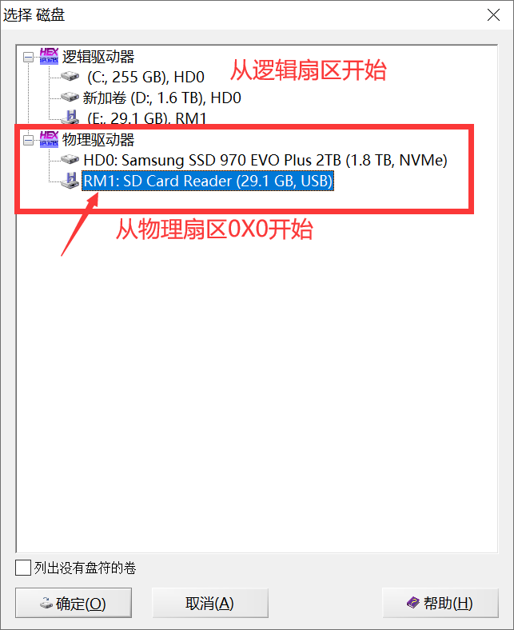
如果你非要选择逻辑驱动器E:/，那么你会惊喜地看到逻辑扇区0对应着物理扇区8192，当然在左侧的bin文件中，你会怎么也找不到下方的MBR扇区，最左侧的0X0000\_0000代表的是逻辑地址，而非物理地址：
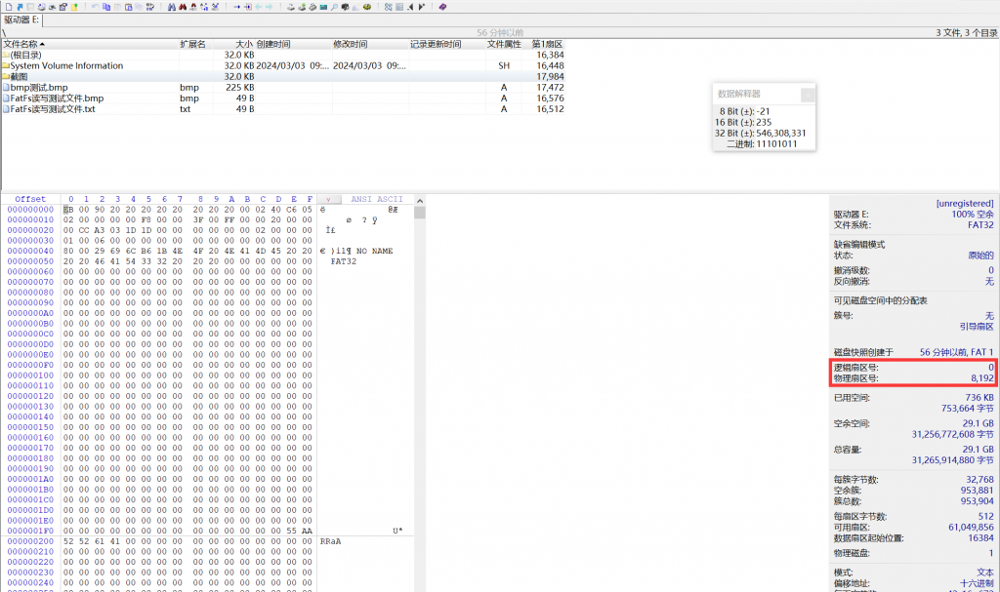
MBR扇区
MBR（Master Boot Record）主引导记录，其中的前 446 个字节为引导代码，存放系统主引导程序 (它负责从活动分区中装载并运行系统引导程序)，在我们的SD卡中并没有使用，这让我想起之前用U盘制作Ubuntu或者Windows启动盘，好像就有这样的分区。接下来的 64 个字节为分区表，其中 16 个字节为一组总共四组，每一个组都描述了一个分区，最后两个字节为固定的末尾签名，0x55、0xAA。
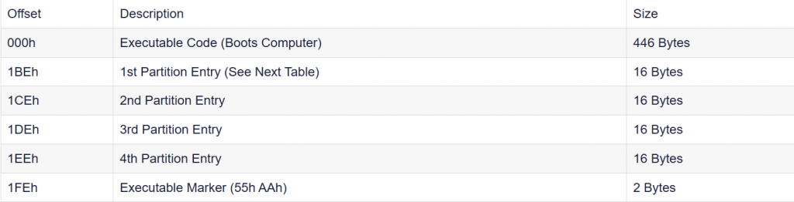
MBR主引导记录的构成
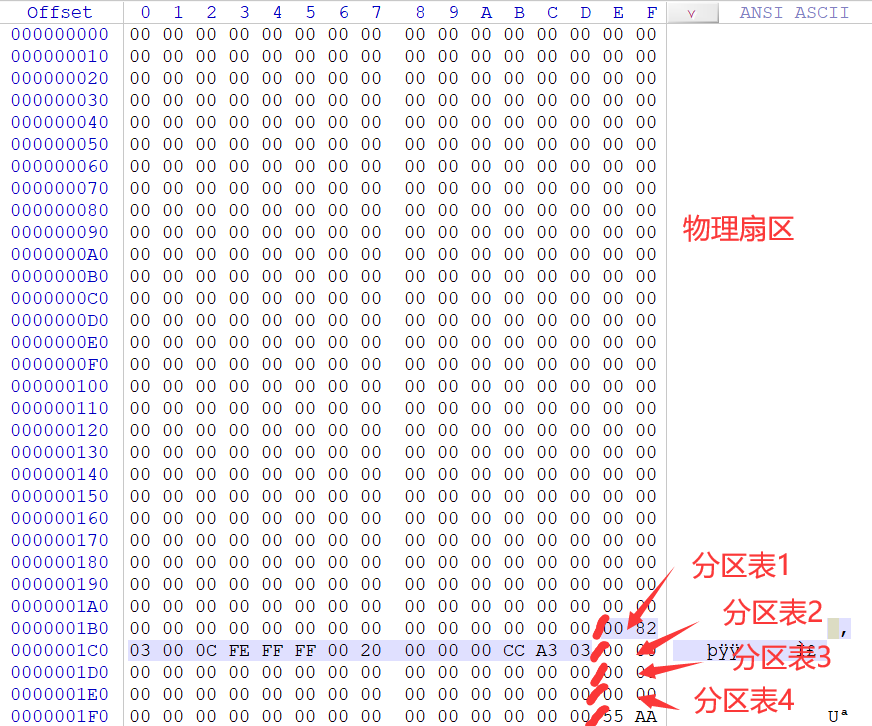
我们可以看到我们只有分区表1中存在数据，而这16个字节的分区表的不同字节也代表着不同的含义：
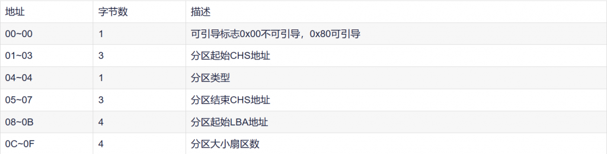
分区表的字节构成
我们需要关注的就是分区起始LBA地址，也就是接下来要分析的DBR偏移量，当然也是逻辑分区0的扇区号偏移量：0x0000\_2000（计算机中存在大小端存储，不再赘述）。
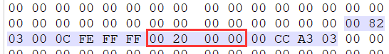
DBR
注意：上面的地址0x0000\_2000并不是真实的地址，而是相对于起始偏移的扇区个数，还需要一定的计算才能得到DBR(DATA BOOT RECORD)的首地址。
我们首先把0x0000\_2000转化为十进制8192，这个数字是否很眼熟，如果你不小心打开了逻辑分区模式，你就会看到偏移。
8192个扇区，每个扇区是512个字节，偏移4194304个字节，那么DBR起始地址就在0x0040\_0000处，非常完美。
我们可以使用工具栏中的“导航->转移到偏移量”，跳转到DBR的位置：
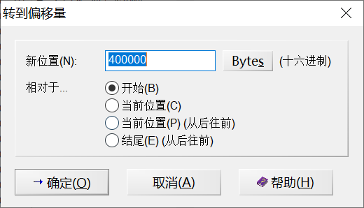
DBR 部分由跳转指令、OEM ID、BPB（BIOS 参数）、拓展 BPB、引导程序和结束标志组成。
- 跳转指令将呈现执行流程跳转到引导程序处；
- OEM ID 由厂商指定，这里是 MSDOS5.0；
- BPB 记录文件系统相关的重要信息，由 BPB 和拓展 BPB 组成。
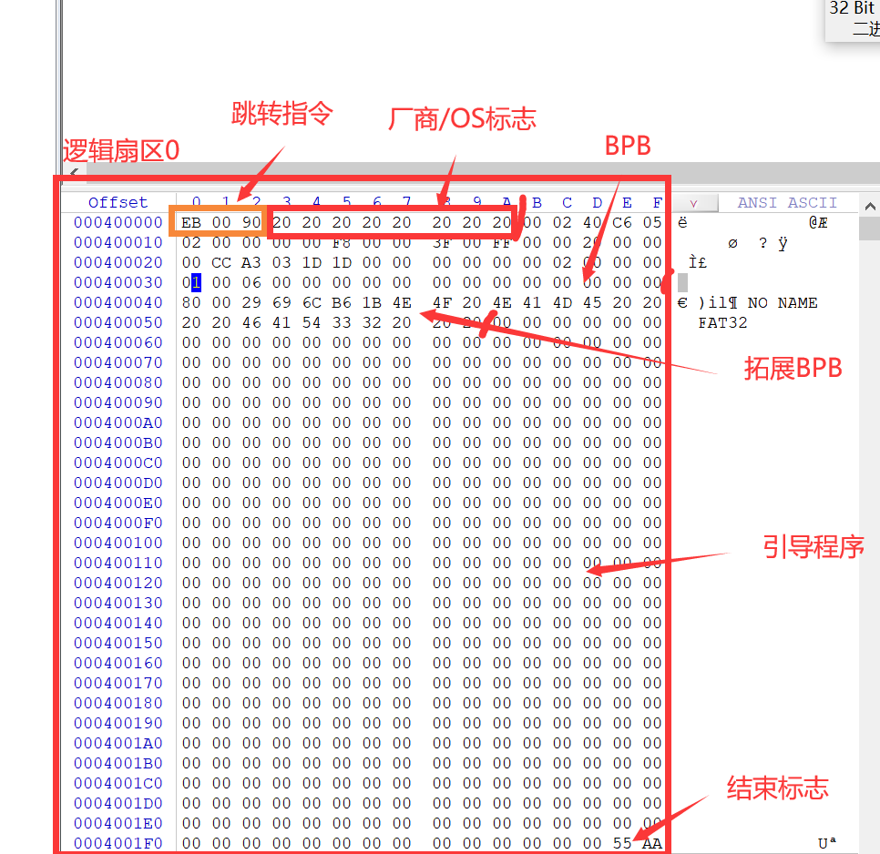
BPB的详细信息，可以右键“分区1(E:) -> 模板”获得：
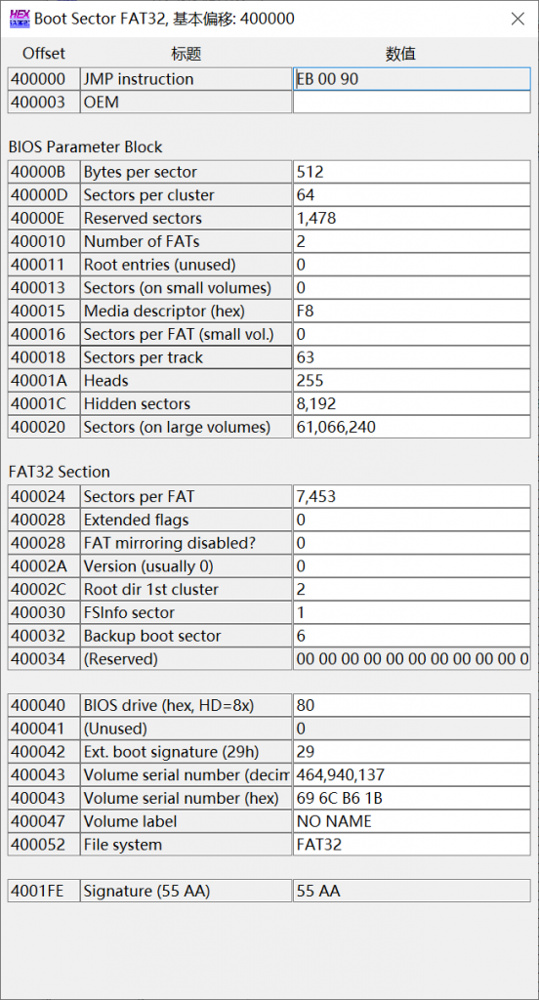
文件系统的DBR属性
可以看到，与我们之前获得的偏移量是一样的，在逻辑扇区的扇区0前面存储的都是MBR和保留区：
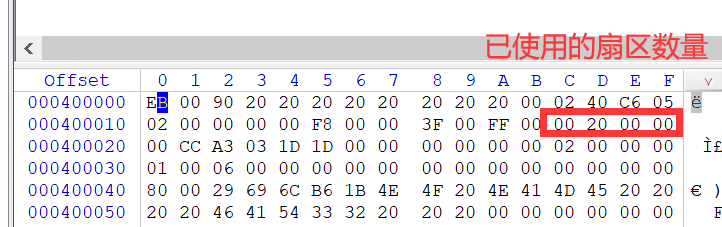
FSINFO文件系统信息扇区
FSINFO一般是紧跟着DBR后面的，从DBR中的偏移量可以看到0X0001，偏移一个扇区。用以记录数据区中空闲簇的数量及下一个空闲簇的簇号。
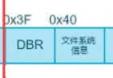
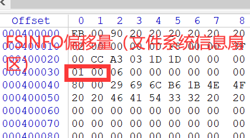
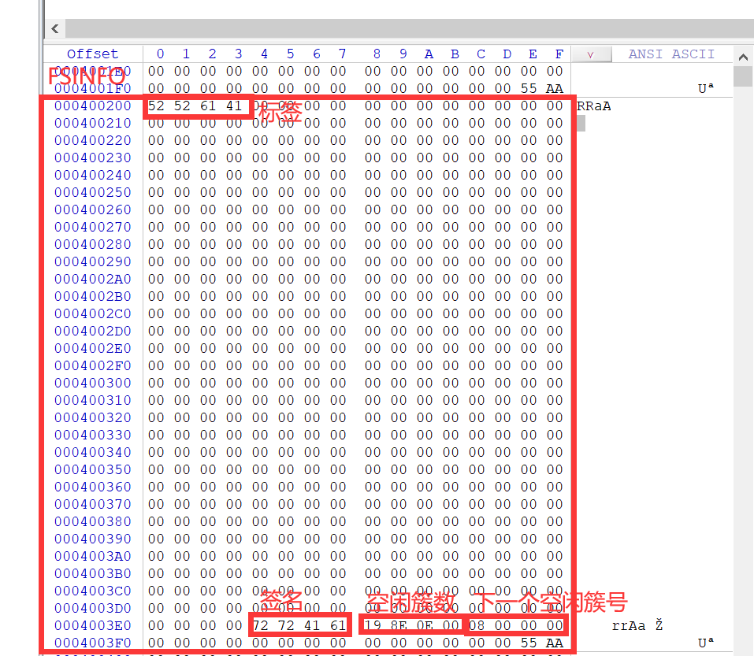
FAT表
这部分是文件系统的主要组成部分，起到“目录”的作用。有两个完全相同的 FAT（File Allocation Table， 文件分配表）表组成。
那么这个FAT表在哪里呢？
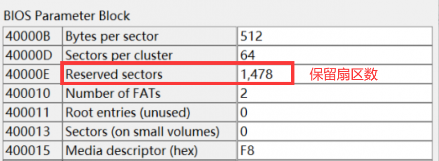
就像是单向链表一样，每一个部分都会存在着指示给你导航到下一个部分，DBR的参数显示保留扇区数为1478个，加上DBR之前MBR的保留扇区数为8192个，FAT表是在相较于物理起始扇区的9670个扇区位置开始的。将（9670\*512）转换为十六进制得到0x004b\_8c00，通过导航到这个字节偏移地址，这就是FAT表的位置。
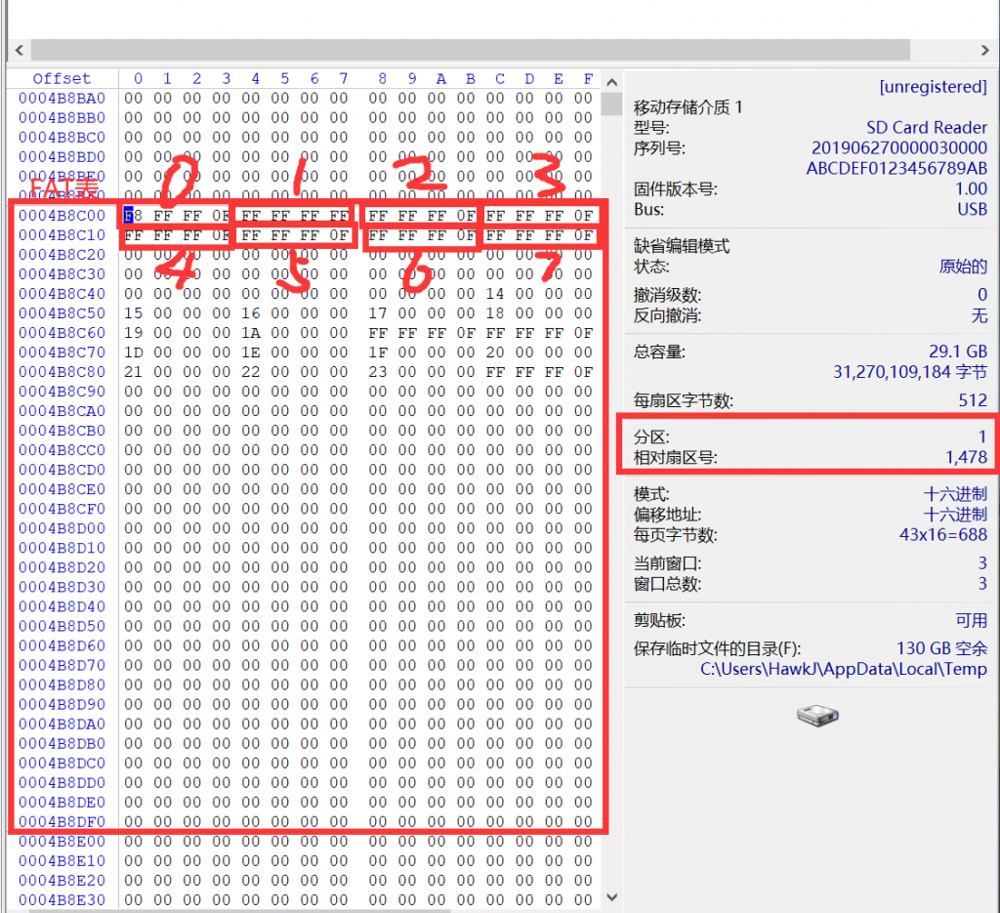
FAT 表项编号从 0 开始，编号 0 表示 FAT 介质类型，编号 1 表示 FAT 文件系统错误标志，这两个表项均不与实际的物理地址对应。
从 FAT 表项编号 2 开始为数据区表项，这里开始才与物理地址对应。其中，2 号表项往往是根目录(格式化就生成了)，占簇区顺序上的第 1 个簇（即 2 号簇）。
接下来，3~7 号表项为磁盘中存储的文件，共 5 个文件，每个文件都比较小，各自占用了 1 个簇。文件至少占用一个簇，所以新建文件的时候，即使你只写入 1 字节的数据，它也会占用一个簇的空间。如果是存储的大文件，则会占用多个簇，当前 FAT 表项纪录下一个 FAT 表项编号，依次类推直到最后以“0F FF FF FF”表示文件末尾。
还有一些概念，可以用于查找（参考：https://blog.51cto.com/u_16099321/7739958">fatfs文件系统架构 fat文件系统详解\_mob6454cc7796a7的技术博客\_51CTO博客）：
- FAT32 中每个簇的簇地址，是有 32bit（4 个字节）记录在 FAT 表中。FAT 表中的所有字节位置以4 字节为单位进行划分，并对所有划分后的位置由 0 进行地址编号。0 号地址与 1 号地址被系统保留并存储特殊标志内容。从 2 号地址开始，每个地址对应于数据区的簇号，FAT 表中的地址编号与数据区中的簇号相同。我们称 FAT 表中的这些地址为 FAT 表项，FAT 表项中记录的值称为 FAT表项值。
- 当文件系统被创建，也就是进行格式化操作时，分配给 FAT 区域的空间将会被清空，在 FAT1 与FAT2 的 0 号表项与 1 号表项写入特定值。由于创建文件系统的同时也会创建根目录，也就是为根目录分配了一个簇空间，通常为 2 号簇，所以 2 号簇所对应的 2 号 FAT 表项也会被写入一个结束标记。
- 如果某个簇未被分配使用，它所对应的 FAT 表项内的 FAT 表项值即用 0 进行填充，表示该 FAT 表项所对应的簇未被分配。
- 当某个簇已被分配使用时，则它对应的 FAT 表项内的 FAT 表项值也就是该文件的下一个存储位置的簇号。如果该文件结束于该簇，则在它的 FAT 表项中记录的是一个文件结束标记，对于 FAT32而言，代表文件结束的 FAT 表项值为 0x0FFFFFFF。
- 如果某个簇存在坏扇区，则整个簇会用 FAT 表项值 0xFFFFFF7 标记为坏簇，不再使用，这个坏簇标记就记录在它所对应的 FAT 表项中。
- 由于簇号起始于 2 号，所以 FAT 表项的 0 号表项与 1 号表项不与任何簇对应。FAT32 的 0 号表项值总是“F8FFFF0F”。如上图所示。
- 1 号表项可能被用于记录脏标志，以说明文件系统没有被正常卸载或者磁盘表面存在错误。不过这个值并不重要。正常情况下 1 号表项的值为“FFFFFFFF”或“FFFFFF0F”。
- 在文件系统中新建文件时，如果新建的文件只占用一个簇，为其分配的簇对应的 FAT 表项将会写入结束标记。如果新建的文件不只占用一个簇，则在其所占用的每个簇对应的 FAT 表项中写入为其分配的下一簇的簇号，在最后一个簇对应的 FAT 表象中写入结束标记。
- 新建目录时，只为其分配一个簇的空间，对应的 FAT 表项中写入结束标记。当目录增大超出一个
簇的大小时，将会在空闲空间中继续为其分配一个簇，并在 FAT 表中为其建立 FAT 表链以描述它所占用的簇情况。
- 对文件或目录进行操作时，他们所对应的 FAT 表项将会被清空，设置为 0 以表示其所对应的簇处于未分配状态。
数据区
在文件系统中，扇区是最小存储单位，1簇在我的文件系统中定义的是64个扇区，用户使用使最小的操作单位是1簇，也就是32kB（512B \* 64），也就是只要你创建了一个文件，向里面写了“Hello”（也就几个B），这个文件也会占用32kB。
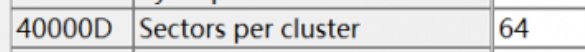
每簇的扇区个数
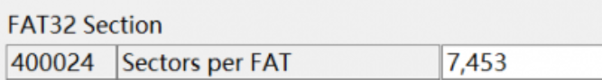
FAT的扇区个数
那么FAT表和数据区有什么对应关系呢？
我们继续回顾前面的表项，到FAT之前一共9670个扇区，2个FAT占扇区14906个，所以到数据区的起始扇区相对于物理扇区0偏移了（24576\*512）0xC0\_0000个字节
数据区的物理扇区 =
第一个 FAT 的物理扇区（0x004b\_8c00） + FAT 扇区数 \* FAT个数
\= 0xC0\_0000
我们成功导航到这个位置，这是数据区的第一个扇区，也是这一簇的第一个扇区的起始位置：
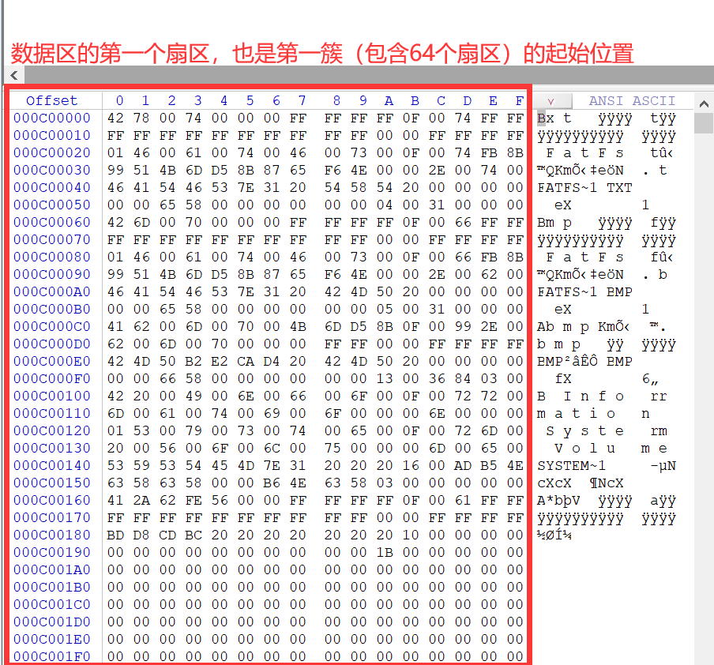
为了让更加清晰地理解文件是如何存储的，我修改了我sd卡中文件的名称，并且在图中给出了详细的注释，这张图十分重要（画了好久），每32个字节代表一个FAT32 短文件目录项 ：
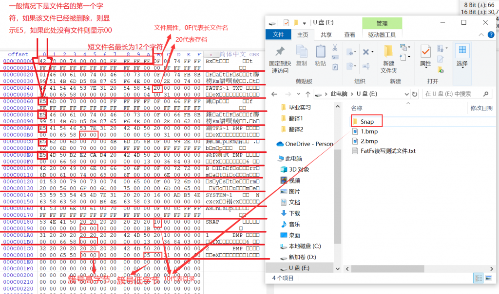
可以对照下图：
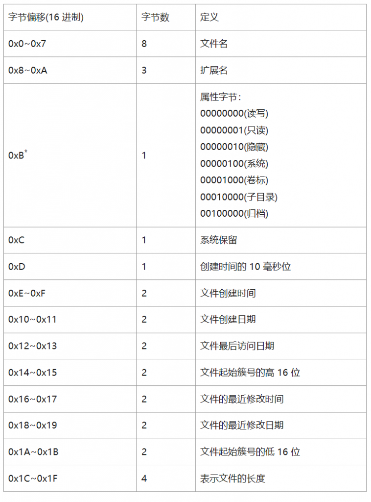
FAT32 短文件目录项 32 个字节的表示定义
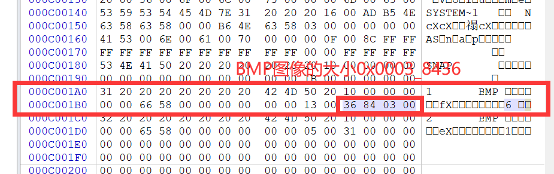
图像大小
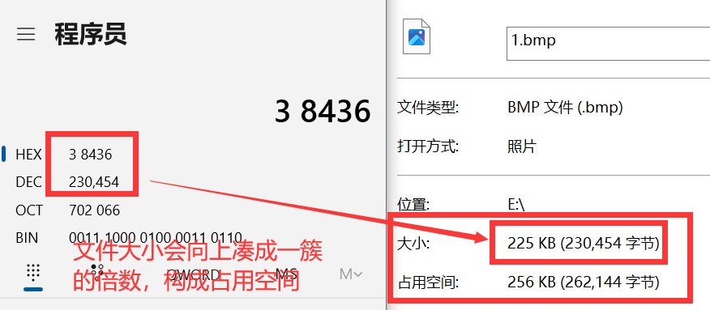
对应关系
FAT表如何指引
文件至少占用一个簇，所以新建文件的时候，即使你只写入 1 字节的数据，它也会占用一个簇的空间。如果是存储的大文件，则会占用多个簇，当前 FAT 表项纪录下一个 FAT 表项编号，依次类推直到最后以“0F FF FF FF”表示文件末尾。
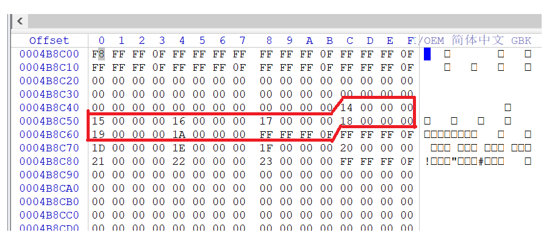
如上图所示：当前 FAT 表项纪录下一个 FAT 表项编号，图中圈出的第一个4字节，在0x0000\_0013的位置（第19簇的位置）存储着0x0000\_0014代表着十进制的20，也就是指向了第20簇。
举个例子，我们查找txt文件。
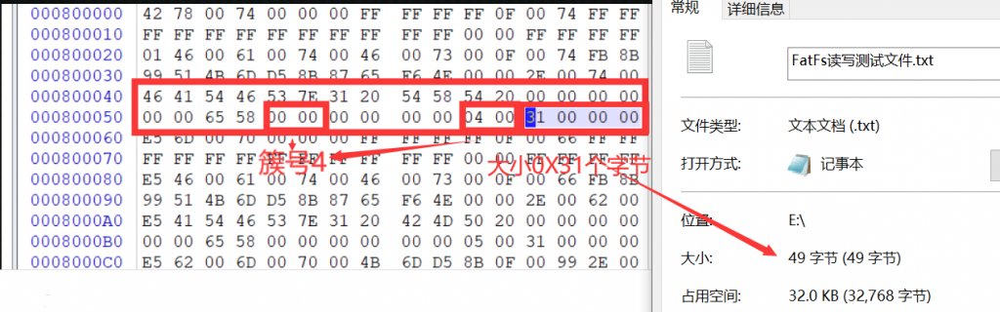
FAT 表项编号从 0 开始，编号 0 表示 FAT 介质类型，编号 1 表示 FAT 文件系统错误标志，这两个表项均不与实际的物理地址对应。
从 FAT 表项编号 2 开始为数据区表项，这里开始才与物理地址对应。其中，2 号表项往往是根目录(格式化就生成了)，占簇区顺序上的第 1 个簇（即 2 号簇）。
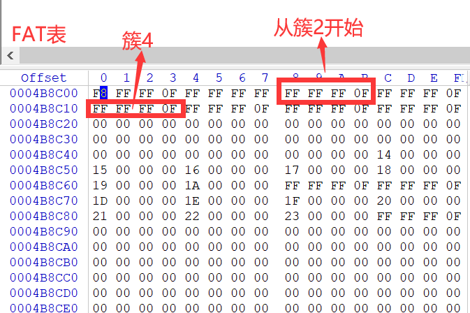
在数据区搜索某一簇，基本上都是以簇2为基准进行搜索的。
计算其他已知簇号的扇区号，还要由引导扇区的偏移 0x0D 字节处查找到每个簇大小扇区数，并使用如下公式计算：
某簇起始扇区号 = 保留扇区数 + 每个 FAT 表大小扇区数 × FAT 表个数 + （该簇簇号 - 2） × 每簇扇区数
我们到簇号4处寻找，簇号4的位置相当于数据区扇区号偏移
64\*（4-2）= 128 个扇区：
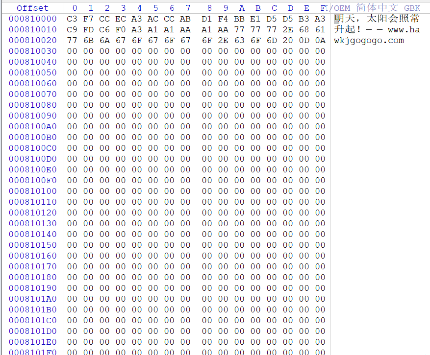
我们便找到了这个txt文件，这个文件虽然只有49个字节，但仍然会占用一簇（512\*64 =32k）个字节。
小结
总的来说，文件系统的知识框架就告一段落了，可以理解为文件系统类似于单向链表，通过FAT表中的4个字节数据来代表1簇的占用情况，就像是在售楼部看还有那些房子已经卖出，或者是有哪一户买了好几块地（这些房子虽然不连续，但是能够像单向链表一样找到下一个房子的门牌号）。而根目录就如其名“目录”，可以通过这个目录来进行一种类似于数据结构中“树”的操作，通过目录可以找到子目录，而一直向下找到文件（叶子节点），在目录中也会标有其簇号是多少，根据偏移量进一步可以计算出文件的位置，从而读取文件，完结，撒花！